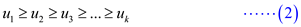

Greedy algorithm: In such an algorithm, optimal choice is made locally at each state hoping that it leads to a global optimal solution.
The problem has to exhibit the following two properties for it to be solved optimally using greedy approach:
• Greedy choice property
• Optimal substructure
Knapsack problem comes with a set of items. Each item has a weight and value attached to it. The solution involves finding the items whose collection leads to the maximum value while keeping within the maximum possible weight limit.
Fractional knapsack problem allows breaking the item to add a fraction of it so as to have the maximum total value possible. The algorithm involves sorting the items in decreasing order of and then adding them in a greedy fashion according to the sorted order. When adding the next item isn’t possible anymore due to the size of the knapsack, break the item and add a fraction of it.
Greedy Choice Property: If g1 is the first greedy choice, then it should be part of an optimal solution.
Let there be a total of n items.
The set of items be denoted by.
Weight of the items is denoted by
Values of the items are denoted by.
Let the optimal solution be called  which
includes the following items .
which
includes the following items .
Let the solution created using greedy approach be denoted by
 and
includes the items .
and
includes the items .
The item has the maximum ratio. Therefore, its inclusion will give better total value than any other item. So, it should be present in the optimal solution.
Objective of this step is to show that g1 is part of an optimal solution O.
Since this is fractional knapsack problem, it allows fraction of the items to be added, so, there are two cases:
• is an integer
• is a fraction
Case1: is an integer
• If the item is already present in the optimal solution O, then the greedy solution is optimal till now atleast.
• If the item is not present in the optimal solution O, then it should be added to the optimal solution, so remove some items from O worth the weight equal to. Then put the item in its place. This creates a new solution called.
Case2: is a fraction of an item
The weight to be included is.
• If part of item is already present in the optimal solution O, then the greedy solution is optimal till now atleast.
• If anything less than part of item is present in the optimal solution O, then it should be added to the optimal solution, so remove some items from O worth the weight equal to. Then put the part of item in its place. This creates a new solution called.
But the solution is already
optimal solution. So this improvement couldn’t have created any
better solution. However, the new solution should be atleast as
good as because of
the addition of. So the new
solution is exactly
as good as the solution as it can’t
be better than an optimal solution. So is in
itself an optimal solution. Thus, the greedy choice is part of
an optimal solution.
Hence, it is proved that fractional knapsack problem has the greedy choice property.
Optimal substructure of 0-1 Knapsack Problem
• If a problem exhibits optimal substructure, the problem can be solved using dynamic programming.
• 0-1 knapsack problem exhibits the optimal- sub structure property. Thus, if thief selects a most valuable item i from n items, then the thief can select optimal set of most valuable items from the reaming (n-1) items such that the weight at most W-wi. Where, each item is associated with a value (v) or price and a weight (w) and W is the maximum capacity of the knapsack.
Therefore, we can solve the 0-1 knapsack problem using recursive structure.
Recursive definition for 0-1 knapsack problem:
• Consider that V[i,w] is the optimal value for items 1,2,3,...,i and the weight is at most w.
• Now, define a recursion structure such that an item i is selected , if an optimal value can be selected form the remaining items and their weight is at most w-wi. Otherwise, the item i does not selected and optimal values are selected form the reaming 1,2,…i-1 items up to the weight w.
This can be represented using a recursion as follows:
Where  is the
value of the item i.
is the
value of the item i.
Dynamic algorithm for 0-1-Knapsack problem:
• Consider n items of weights and values and a maximum capacity of knapsack(W).
• The following algorithm computes and stores the optimal solutions in the table whose entries are computed in a row-major order. At the end of the computation, V[n,w] contains the maximum value that can be picked into the knapsack.
0-1-KNAPSACK-DYNAMIC (W,n,v,w)
//Let V[0…n,0…W] is the new array to store solutions
1 for w=0 to W
2 V[0,w]= 0
3 for i=1 to n
4 V[i,0]=0
5 for w=1 to W
6 if
7 if
8
9 else
10
11 else
12
13 return V
The value V[n,W] is the required solution. The algorithm traces the table V to find the set of items that are part of the solution.
Time complexity:
The two nested for loops in the lines 3 and 4 runs (n+1).(W+1) times and computes the entries of the table V. Thus, obviously the running time of the above algorithm is.
Hence, the ru nning time of a 0-1 knapsack algorithm is .
Consider the following greedy-type algorithm to find an optimal solution to the given variant of the knapsack problem.
Assume that denotes the
 items with the and
as
their values and weight respectively. Suppose that the maximum
knapsack weight is given as
items with the and
as
their values and weight respectively. Suppose that the maximum
knapsack weight is given as . Then,
. Then,

Now consider the linear-time algorithm to find the optimal solution to the given variant of the knapsack problem.
Greedy-Type-Algorithm:
//Initialize the knapsack weight
1
// Initialize the content of knapsack with NULL
2
//for loop is used for iteration till less than equal to
3
//if conditional statement is used to check” is the sum of weight is less than
//or equal to the maximum knapsack weight”.
4
//if the above if condition is true then increase the weight
5
6
The above algorithm finds the optimal solution to the given variant of the knapsack problem. The proof of correctness of the algorithm generally consist two steps:
• The greedy choice property.
• The optimal substructure property.
The greedy choice property:
• Assume that the knapsack load is denoted as . Therefore,
it can be shown that the one can assume without
losing of generality.
. Therefore,
it can be shown that the one can assume without
losing of generality.
• Actually, if , assume the
smallest index of an item of be .
• Now, consider the packing.
• As, , then
 ,
therefore will be a
legal packing.
,
therefore will be a
legal packing.
• In the same way, which implies that. Therefore, will also be optimal.
The optimal substructure property:
• Now consider for the optimal packing which
consists, the
packing is optimal
for the given item and
.
• Actually, if is not
optimal, which a user can enhance the original packingby
enhancing.
The algorithm satisfies both greedy choice and optimal substructure properties.
Therefore, the algorithm is correct and finds the optimal solution to the present variant of knapsack problem.
Algorithm to find the shortest possible root using greedy approach
The optimal strategy of the given scenario should be a Greedy one.
Suppose there is k refilling locations beyond the start that are within m miles of the start. The greedy solution chooses the kth location as its first stop. No station beyond the kth works as a first stop.
Since Professor Gekko would run out of water first. The professor will try to cover the maximum distance before his water runs out.
At Grand Forks, the professor has all the possible routes in front of him.He now first eliminates the stops which are more than m miles away from him.
From the rest of the stops, he will choose the stop that traverses the maximum distance that is less than m.
Doing this for all the further stops, the Professor will be able to stop at minimum stops.
The algorithm for this is given below:
The algorithm below gives the minimum number of water stops that the professorcan go through.
MIN-WATER-STOP(N)
1 //Initialize the distance of current stops to 0
distance_current = 0;
2 //for loop to trace all the stops
For stops 1 to n
3 //condition to check whether the distance is more than 2 miles.
if (distance_current + distance_to_next_stop> 2 mile)
4 //Mark the current stop, means the stop should be there
mark_current_stop();
5 //Make increment in the number of stops
number_of_water_stops++;
6 //Make the distance_current equal to 0 so that in other iteration the distance
//remain 0
distance_current = 0
7 else
8 //add the distance of next stop in the current distance.
distance_current = distance_current + distance_to_next_stop;
9 //after calculating the stops, return the number of marked stops.
Return marked_stop
In the algorithm given above, the water stop is made by professor if the distance between the upcoming refill and last refill is more than 2 miles. If he can easily reach to next stop, there is no need to make any stop there.
So, this leads to the property of sub-optimality, this property makes m number of minimal stops.
Suppose that there exists another solution with requirement of m–1 stops. It is not possible to cover the distance when a stop is omitted because the water will not be there. It is because the distance will become more than 2 miles.
If the number of available stops is represented by n, the complexity of the algorithm can be calculated as below:
If n=1, then the loop would be running only one time making the time:
If n=2, then there would be 2 repetitions of the loop and the time taken would be:
…
…
For the n repetitions of the loop there would be n calculations and the time taken would be equal to
Thus the running time of the algorithm for n stops would be.
This greedy algorithm can be described to solve the finding unit intervals problem. At each stage, it finds an interval and a new optimal set to solve (smaller than earlier set), which contains the elements not covered in the interval.
The following algorithm describes who to find the smallest set of unit-length interval that covers all the points in the given set.
Algorithm:
1. Sort the points in the given set of points on real line X
= .
.
2. The first interval is . Add the interval to a set UI, which is initially empty.
3. Remove all the points, which are not covered in the unit interval .
4. Repeat step 2 and 3 until the given set is not empty.
5. Return the set UI, which is the small set of unit-length closed intervals that covers all the points in the given set X.
Pseudo code:
GREEDY-FIND-UNIT-INTERVALS(X)
1. Sort the points in the set X such that
2. Let UI be the set and initially UI=
3. while X ≠  //repeat
the loop until the set X is not empty
//repeat
the loop until the set X is not empty
4. = smallest number in the set X // =first element in X
5. //add the unit interval to UI
6. for i=0 to X.length
7. if and

8. remove the point from the set X
9. return UI
Proof of correctness:
Since the given set is sorted, =
x1, where x1 is the first
element in the given set X. Then each time an interval
is
found. That is, each time at least one
element(x1) is removed from the set and a new sub
problem or a subset (i.e.
= -
x1 ) is produced. Therefore, each time the
algorithm produces an optimal solution (a unit-length interval).
When the set X is empty, the set UI contains the set
of unit-length intervals that cover all the given points.
-
x1 ) is produced. Therefore, each time the
algorithm produces an optimal solution (a unit-length interval).
When the set X is empty, the set UI contains the set
of unit-length intervals that cover all the given points.
Optimal substructure is important for greedy algorithms. The above GREEDY-FIND-UNIT-INTERVALS algorithm have optimal substructure, because each time a unit interval is found from the subset, the final solution is the union of all the intervals found in the sub problems.
Consider n be the number of items, valuable load, and the weight of the item j in the knapsack fractional problem.
Use a linear-time quicksort- like median selection algorithm to calculate the median m on the ratio , for every .
Sorting these ratio into decreasing order and added the item into the knapsack greedy.
Initially start, with largest ratio and then added the items int the left blank space.
If there is any space left, then fractional of these items until to fit the knapsack.
Knapsack problem requires running time is O(n log n) due sorting the step.
Avoid the sorting step, using the quicksort-like median selection algorithm to solve the knapsack problem in the linear time.
Consider the set be the ratio of valuable load/ weight.
Suppose, input of the knapsack: A set of m of n ratios, with knapsack capacity W.
Assume expected output: A set of items, to show the optimum solution of knapsack.
There are some steps to solve the fractional knapsack problem into the O(n) time.
Step 1: Choose an element k from the set m, using quicksort-like median selection algorithm.
Step 2: Evaluate these cases one by one is as shown below according to the condition and set the fraction maximization knapsack value:
Case 1:
Case 2:
Step 3: When at most valuable load weight W1 and remaining the weight w.
if W 1 > W
then recursive the case 1, and after that return the computed solution.
else
while (Check there is blank space available in
knapsack and m2 still have some item(element))
then add some items from the m2
if (when knapsack is full)
return the items in case 1 and the item just added from the case 2.
else
now, add the optimum knapsack capacity .
recursion on the case 3 and then return the items in .
and the items returned from the recursive call.
Step 4: Repeat the above steps until found the optimum knapsack result.
To analyze this algorithm, recursive the fraction knapsack 0-1 problem. Firstly, apply the quicksort-like median algorithm to selection the median element. When there is a recursive call for any above given three cases. After that check, the half of the knapsack problem of the recursive size.
Thus, the problem solved in linear time by the recurrence whose solution is .
Consider A and B are two sets contain n positive elements each. Now use following MAX-CALCULATE () algorithm to maximize the payoff.
MAX-CALCULATE( )
1. Consider and are two arrays contain n elements.
//call sorting algorithm to sort n elements of both array either in increasing order or
//decreasing order
2. Call MERGE-SORT (A)
3. Call MERGE-SORT (B)
4.
5. for  to
n
to
n
//use pow() function to calculate power and then multiply it with payoff
6.
7. return 
Explanation:
• In line 2 and 3, the above program sort both of the arrays in increasing order using merge sort.
• In line 4, program declares the variable payoff to calculate the amount and initialize it to 1.
• After that, the for loop calculates and multiply the value of and multiply it to payoff.
• In the line 7 program returns the calculated value.
Proof of Correctness:
• Consider any indices i and j and .
.
• Now consider the element of A and B at these indices. Since both of these arrays are sorted and .
• Also and all elements in array A are non-negative integers.
• So, raising the values of to , user will have
…… (1)
• Multiplying both side with in equation (1) , the value will become
…… (2)
• From equation (2), the value will produce the best result.
• Also the order of multiplication does not matter, so one can sort the above arrays in decreasing order too.
Time complexity:
• Program uses merge sort twice to sort the arrays and uses a single loop which goes from 0 to n.
• So, the complexity of the above program is as follow:
So, the complexity of above program is .
Example:
Consider the following two sets:
• Both the sets A and B contains 4 elements, therefore the value of n becomes 4.
• According to 2nd and 3rd line of MAX-CALCULATE() algorithm, call MERGE-SORT() procedure to sort elements of A and B set.
• The element of A and B set after sorting is as follow:
• Now, according to 5th line a for loop get started. Before the first iteration of for loop the value of payoff is 1.
• In first iteration,is calculated with the help of pow() function and then multiply resultant with payoff value. At the end of first iteration the value of payoff variable becomes 2.
• Similarly, after second iteration the value of payoff variable becomes 128.
• After third iteration the value of payoff variable becomes 995328.
• After fourth iteration the value of payoff variable becomes 2087354105856. After the 4th iterations the for loop get terminates.
At the end, MAX-CALCULATE () procedure returns 2087354105856 value to its calling program which is greater than any other arrangement.